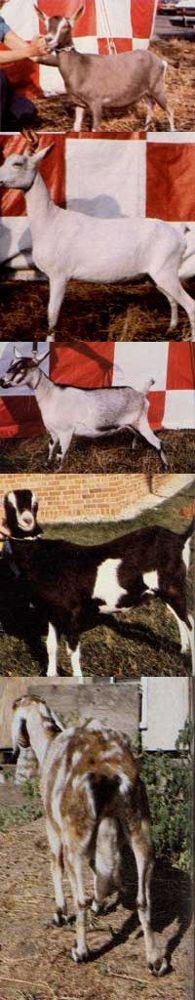

MOTHER's livestock expert provides all the basic know-how necessary to raise a very valuable-and popular-homestead animal.
You can produce all the milk you'll ever need-for pennies a gallon-by raising goats. And that homegrown drink will be fresh, delicious, and exceptionally healthful. In fact, many folks (including some babies) who are allergic to cow's milk can readily digest goat "nectar".
(And by the way, the myth that goat's milk has a disagreeable "off" flavor is simply untrue. If you keep your equipment clean and quickly chill your nanny's daily offerings-as you'd have to do to keep any dairy product tasty-you'll find that goat's milk is every bit as good as, if not better than, "moo juice".)
There are many other advantages to rearing your own goats, too: Each doe will, every year, produce two or three youngsters that can be used as replacement stock, butchered for their tasty meat (called chevon), or sold to other goat farmers. The animals are excellent browsers that can forage for much of their own feed. The beautiful hide from butchered bucks and does can be made into vests and rugs. Some goats (the mohair varieties) grow luxurious coats of usable wool each year. The livestock can become great companions as well as helpful cart pulleys. Goat's milk can be used to make yogurt and-with a bit of know-how and practice-delicious butter and cheese. And finally, every caprine critter you raise will contribute valuable manure for your vegetable garden.
RECOGNIZE YOUR MARKET
Goats are often called "poor man's cows", because they're the most practi cal homestead milkmakers imaginable. A good dairy cow, it's true, can produce as much as five gallons of bovine beverage per day . . . more than most households can use, and she'll eat a heck of a lot of grain and hay. A goat will average a usable yield of a gallon (or less) of milk daily, during its annual 305-day lactation period . . . and will consume a lot less feed while doing so.
Of course, even a gallon of the liquid nutrient is a lot for many families to consume each and every day, so you may be tempted to think of turning your goat-raising hobby into a small home business. If so, it's best that you forget the idea. As I've explained in previous articles in this magazine, you should consider your own household to be the market for almost all your homestead livestock products. This, "rule" is especially true when applied too goats . . . because the laws regulating milk sales in most states make setting up a small caprine dairy almost impossible. (You can, of course, check your local county or state health department to find out about the requirements for milk sales in your area.)
There are, however, many ways to use your excess milk supply. You can make yogurt or cheese, and feed other livestock with it (chickens and pigs love goat's milk). It's also possible to use goat cream to make butter, but let me forewarn you that this process is somewhat difficult because a nanny's milk has such tiny fat droplets that, in effect, it's already homogenized. Most folks find they need a manual or electric cream separator (the units are available through goat supply houses) to collect usable quantities of cream.
A doe yields more than milk, of course . . . each year she'll birth from one to three kids. The youngsters can present the beginning goatkeeper with a problem because-since they're about the cutest and most lovable animals on this earth-you may get so attached to the furry little newcomers that you'll end up surrounded by hordes of full-grown nannies and billies.
To avoid that problem, you must be prepared to sell or butcher some of your home-raised goats. Actually, any female offspring are relatively easy to deal with. One of your best doelings can be saved to replace its momma on the milk line when the old gal reaches five or six years of age . . . and you'll generally find a good market for your other young does.
Buck kids, however, are another matter. In order to ensure that the best possible male genes go into the makeup of your future herds, you should save only one out of every hundred b illies to be a breeding sire. The many males that don't meet such a rigid standard of excellence should be castrated when they're less than three weeks of age and, ultimately, butchered. Since there's nothing tastier than chevon (its flavor resembles that of lamb), most folks don't mind at all that about half of their nanny's kids will be bucks.
The meat can be harvested shortly after the males are born (prepare it much as you would rabbit) or when the youngsters are weaned at 8 to 12 weeks of age. Then again, you might want to keep the animals until they reach their mature weight of 60 pounds . . . at around six months. (Don't wait any longer, though . . . a goat doesn't grow much after it reaches maturity.)
KNOW WHAT A NORMAL ANIMAL LOOKS AND FEELS LIKE
When you decide to purchase a herdstarting doe (or two), you'll immediately be faced with the decision of what breed to invest in. In the U.S., the five most popular purebred goats are Toggenburg, French Alpine, Saanen, La Mancha, and Nubian. (The last two varieties could be called the "Jersey cows" of goats: Although they give slightly less milk than do their three "cousins", their product is high in butterfat.) Any of the five breeds can be successfully raised in all parts of North America, but in most cases the best breed for you will be the one that is most common in your area . . . since their offspring will be the easiest to sell to other folks.
Grade (crossbred) goats will often yield just as much milk as-or even more than-their purebred sisters do, and will usually cost less to buy. But the offspring from such animals will almost never sell at as high a price as do purebred kids. Therefore, it's probably better to buy a higher-priced purebred doe at the outset, and then pay yourself back for that purchase later . . . through the sale of the kids.
Another decision you'll have to make is how old a goat to buy. (You can judge the age of any horned ruminant by examining its teeth: A young goat, for example, has a set of small baby teeth. These are replaced by larger, adult teeth-at the rate of one pair a year-over a four-year period.) Kids will be the least expensive purchases, but they'll also be the riskiest buys, since only a professional goat breeder can judge whether or not a spindly-legged youngster will eventually mature into a high-quality milker.
Older nannies are not always the most practical purchases, either. . . because udder production usually (but not always) tapers off after an animal is four or five years old. The best way to be sure of what you're getting, then, is to purchase a productive two- or three-year-old doe, even though such premium creatures are, naturally enough, the most expensive.
Regardless of what breed-and what age-your herd-starter is, you should be absolutely sure you're buying a normal goat. If you've read my other livestock articles in MOTHER, you already know that a healthy critter should be bright-eyed and alert, walk with an easy-going gait, and have no abscess-indicating lumps on its body (check especially along the beast's neck, legs, and udder). And the animal's droppings should be firm (rather than runny).
BUY THE BEST GOAT YOU CAN FIND
Your first doe will, of course, have a determining influence on the future herd, so-in addition to buying a healthy goat - you should take home only the best specimen you can locate. Now you may at first find that all goats look pretty much alike to you, but with a little practice and experience (which can be most easily obtained by watching from the stands of a local goat show or county fair), you'll be able to discern the difference between a topnotch pail filler and an inferior bottom-of-the-bucket milker.
For openers, a smart buyer doesn't mea sure the quality of a goat by the amount of meat a doe will make, so don't look for a thick, chunky critter that resembles a prime steer, pig, or lamb. Instead, buy an animal with "dairy character" .. . a lean, angular ruminant that's blessed with plenty of body and udder capacity. A good place to start inspecting your prospective milker is right at the animal's midsection. Size up the beast's belly: The rounder and deeper it is, the better. Next, examine her chest. If you can lay the flat of your hand between the doe's front legs, and if two fingers will fit between each pair of ribs, the goat's heart and lungs have a good amount of working space.
Now, eyeball your doe from the rear. The top of her back area, from the hips to the shoulders, should resemble a long triangle. The critter should also be wide at the hip bones and look broad-bellied enough to "store a barrel full of feed". Her back limbs should be placed well apart, and the udder should fill the open space between those legs. The body of the milk sack should also extend well back toward the animal's tail, the back face of the udder should appear to be flat, and its teats should point straight down (rather than out or in).
If all of the foregoing features look good, mosey around to the side of your prospective purchase and examine the animal's udder from this new angle. The sack should extend well forward and fill up most of the flank area. The "floor" of the udder should, again, appear flat and should also lie below, or level with, the animal's hocks. And-when seen from this lateral viewpoint-the teats should seem to be aimed slightly forward. These "handles" should also have a size and shape that will just fit into the palms of your hands.
Finally, don't actually buy the goat-no matter how fine the critter looks-until you've tried milking her! Some spoiled does are so cantankerous that they're almost impossible to work with . . . and in a few others the tubes in the teats (the passages that the milk squirts through) are so tiny that you'll tucker out your fingers before you ever milk the nannies dry.
CULL THE WORST ANIMALS
The other side of goat purchasing and raising-and one that every owner must sooner or later face up to-is culling the herd's least productive animals. Unless you want to keep an ever-increasing stock of caprine pets, you should-each year-select the stingiest milkers, poorest mothers, and least valuable kids (even if one of them is your favorite animal companion) and add them to a neighbor's herd or your own dinner table.
The gleaning process will hold especially true for male goats because, as I said before, you should keep only one out of every 100 young bucks. And how did I pick that particular number? Well, if you assume that an average buck can breed 20 does a year for five years and if each of those mothers bears two kids per litter, one buck can father 200 offspring, and 100 of those offspring will be males. It follows that only one-the very best one-of those young bucks will be needed to replace his aging sire.
BUILD YOUR GOAT H OUSE AND FENCING WELL
When it comes to goat shelter, most caprine caretakers adhere to the rule of K.I.S.S. "Keep It Simple, Stupid!" The animals do not need elaborate homes, so any three-sided shed that'll keep out the wind, rain, or sun will be adequate. Allow 16 square feet of inside space per adult goat, and face the structure south to avoid the prevailing winter winds (while letting in some of that cold season's sunlight). In addition, plan your shelter's construction so the shed will be easy to clean.
Building fencing for goats, however, is not a simple undertaking at all ... because the animals are incredibly skillful escape artists. A nimble-footed nanny can jump a four-foot-high obstacle, squiggle through a tiny hole, shove a fencepost with her head until the pole collapses, and even knock against the top of a fence wire with her front hoofs until she mashes the barrier down and can leap out.
So unless you're hoping to get even with a neighbor whose stray cow just punctured your prize pumpkin, enclose your goat yard as sturdily as possible. One good approach is to use welded wire-with no more than six inches between stays-and mount the material on the in side of firmly placed posts. Be sure the finished fence is at least 4-1/2 or 5 feet high, and add a hoof-resistant top, built out of boards, to the enclosure.
If you're willing to spend $18 to $22 a section, you'll find that commercially available 4-1/2' X 16' fence panels-made out of quarter-inch galvanized steel-are pretty nearly goatproof. Or you might construct a three-stranded electric barrier (with the wires placed 10, 20, and 40 inches above the ground) to contain your critters. Either of these preventive measures should effectively keep most of your caprine livestock at home. Bucks, though, are notorious fence-jumpers ... especially during breeding season. You'll often need to run an electric or barbed wire strand above, and ten inches inside, a five-foot fence to keep the randy animals from roaming.
FEED THE CRITTERS CORRECTLY
One of the most important advantages of goat raising-for the economy-minded farmsteader-is that the milkmakers will function perfectly well on inexpensive hay or foraged food ... with a little grain thrown in to step up their milk or breeding output.
Actually, idle bucks and nonpregnant dry does can be kept in tiptop shape on goodquality hay or some other forage crop alone . . . because the ruminants' internal bacteria can use that food source to produce all the protein, carbohydrates, fats, and vitamins the goats need. Even though bucks and does do love their greens, however, they are not naturally grass-grazers. (So don't buy a billy to replace your lawn mower . . . the picky chewer will strip your fruit trees-or a favorite rose bush-before it starts cutting the grass!)
The grain you feed to your goats should be supplied only to meet the extra protein needs of milk- or kid-producing animals. A pregnant doe, for instance, will do best if given a one-pound scoop of grain daily ... and two pounds a day during the last three weeks of pregnancy. During the breeding season, a buck can also be given one to two pounds of grain a day. (Both animals should, of course, also have access to plenty of good-quality hay or pasture.)
The amount of extra protein a milking doe needs will depend upon how much of the liquid she gives each day and on the butterfat content of that milk. (A county extension agent or area dairy farmer can show you how to determine butterfat levels.) In general, you should feed the dam one-half pound of grain daily for each pound of 3% butterfat milk she produces. If the butterfat content is 5.5%, though, you should give the doe three-quarters of a pound of grain a day per pound of milk. (If you're caretaking an excellent producer that yields as much as 12 pounds of milk daily ... count your blessings and give that remarkable nanny all the grain she wants.)
Remember, too, that any goat's daily dinner won't be complete unless you've added a few "garnishes" ... namely, a free choice supply of both table salt and a good mineral mix (provide both substances in a feed bunk that's protected from the weather). And one more thing: Please NEVER forget to keep clean, fresh water available to your animals at all times.
UNDERSTAND YOUR GOATS' CYCLES
A good understanding of your caprine critters' growth and breeding patterns will help keep you prepared for all their annual natural events. You should know, for instance, that goats can begin their reproductive lives at an early age. Doelings are mature enough for mating when they're only six months old (or reach a weight of 60 pounds), which means that they normally can-and should-be bred during their first fall. And bucks may reach fertile maturity by the time they're just three months old.
A female goat commences her yearly heat cycles when the hours of daylight begin to decrease significantly (in most states, this will occur around August or September). The doe will be in estrus for one to three days at a time, and have an 18-to 21-day "rest" between heats. This pattern will continue (only if the animal's not bred, of course) through March.
Nearly every female goat will let you know when she's in heat by acting more than normally affectionate toward you, bleating and crying frequently, continually wagging her tail, and (perhaps) urinating often. You may also notice some swelling around the animal's vulva and/or a small amount of clear or bloody vaginal discharge. (Now and then you will run across a shy gal that's secretive about her heat periods, but don't worry ... any buck in the area will know exactly what's going on.)
After a successful mating, the doe will be pregnant for 150 days before she gives birth (or, as most dairy folk say, "freshens"). The milk flow of a lactating mother will be strongest during the first two or three months after delivery, gradually taper off, and finally end around 305 days after it begins.
A doe can be rebred for the next year's kid crop while she's still producing milk from last season's. However, the animal should definitely be given a two-month vacation between the end of one milking period and the start of the next. You can calculate when to begin this dry spell by counting backward 60 days from the expected birthday of the next batch of kids .. . or forward 90 days from the anniversary of the doe's fall breeding. On the determined day, simply stop milking the female and put her on a low-calcium, milk-fever-preventing diet. (See the sidebar, "Preventing Ketosis and Milk Fever in the Pregnant Doe", which accompanies this article.)
The best way to "dry up" a goat is to let the pressure of a full udder stop further production. So don't-because you feel sorry for a large-uddered critter-milk the sack out every so often . . . you'd just be prolonging the doe's agony.
KEEP ACCURATE AND MEANINGFUL RECORDS
If you've been reading closely so far, you'll understand how important it is for a goat owner to keep track of birthdays, breeding dates, heat cycles, and dry periods. In addition to such bits of record keeping, you should also list the kinds of medication you use on your milkers-and the dates you administer the remedies- and maintain a daily record of your doe's milk yield throughout her lactation period. (This last statistic can give you a good idea of what each doe's offspring should be worth to a prospective buyer.)
CODDLE THE YOUNGSTERS
The best way to ensure that each of your goats will have a long and productive life is to make sure every newborn starts off on the right hoof. So you should prepare for "kiddings" by gathering up clean rags, filling a wide-mouth plastic bottle with tincture of iodine, and making sure you've plenty of clean bedding on hand.
Newborn goat care consists of paying attention to Dr. Kidd's Three C's: Cleanliness, Cord Care, and Colostrum. Cleanliness is vital . . . the kid nursery should be well ventilated (a three-sided, south-facing shed should do fine) and have a deep bed of absolutely dry and clean bedding for the young'uns to curl up in. As long as you maintain such a nest, you will almost never have to provide any supplemental warmth for the hardy tots . . . in fact, you should probably avoid doing so. Enclosed, heated sheds are almost always too damp (if you can feel moisture on the nursery wall, increase the structure's ventilation or remove some of its inhabitants) and are ideal breeding grounds for all sorts of disease-carrying organisms.
When the youngsters are born, give each one a vigorous and stimulating rubdown with a clean rag until the animal is dry (the nanny can also accomplish this task with her tongue). Then soak each youngster's navel in iodine by dipping its cord stub into your tincture-filled bottle, pressing the container firmly against the kid's belly, and then turning both goat and bottle upside down.
Each babe will also need an early dose of colostrum ... that special antibody, nutrient, and vitamin loaded milk that mothers produce for a day or two after birth. (You might even want to milk out and freeze some colostrum, to save for any orphaned newborns of future litters.) The easiest way to make sure the new arrivals get their share of the precious fluid, of course, would be simply to let the youngsters nurse. Most goat breeders will start the little milkers off on a bottle or pail, though, because suckling kids are difficult to wean (and can be pretty rough on udders), and nursing mothers tend to produce less and dry up sooner than dams whose milk is handexpressed.
So if you want to promote productivity in your doe, bottle-feed the kids-right from the start-with four daily doses of 4 to 6 ounces of milk each. You can then change to three 8- to 10-ounce diurnal feedings by the time the youngsters are one week old ... gradually increase the quantity of milk per serving to 12-14 ounces (again, fed three times a day)... and start to decrease the amount per feeding when the youngsters reach eight weeks of age.
And don't make the all-too-common mistake of overfeeding those new kids, or your little slurpers will develop cases of the runs faster'n you can fetch a pitchfork. Instead, encourage the young'uns to munch on hay and grain at an early age by having plenty of the solid foods around for them to nibble. Rumen development, you see, is stimulated by eating grain and hay (milk, on the other hand, passes right by the ruminant chamber of a goat's four stomachs and goes directly to the last digester, the abomasum), and the sooner that cud-chewing organ begins its work, the faster the kids will grow. If you do encourage such a vegetarian diet, your kids should start sampling grain and greens by the time they're three or four weeks old . . . and be ready to be completely weaned when they're from 10 to 14 weeks of age.
There are two other caretaking chores you should be sure to attend to before your kids are three weeks old: disbudding elf the young critters, and castrating any males you don't expect to breed. The horns on baby goats' heads are mere buttons that can be easily removed, but if you allow the appendages to grow, you'll end up either with a horned adult that's a potential menace to other livestock (and to you), or with an extremely difficult dehorning chore.
To disbud a kid, you first need to get hold of a disbudding iron (some folks use a caustic bovine d isbudding paste for this job, but I've seen too many goats' ears and other hairy parts injured with that substance . . . so in my opinion, the disbudder is the only way to go). You'll also need to build or buy an appropriately sized wooden restraining box that has a porthole for the youngster's head.
Once you've got the kid securely immobilized, heat the disbudding iron until the searing tool will quickly burn a black ring in wood and then press the iron over a horn bud for six seconds . . . rotating the disbudder slightly as you hold it to ensure good contact with the nodule. Repeat this process on the first hornlet, and then perform the same double operation on the other bud . . . to ensure a total of 10 to 15 seconds burning time on each horn surface. When you're finished, the seared ring around the bud will be slick and copper-colored.
On the same day that you disbud your kids, you should castrate the young, nonbreeder bucks. For this procedure, first disinfect your hands and each animal's scrotum. Then, using a sterile knife or scalpel blade, slice off the entire bottom third of the male's testicular sack. Now grasp each testicle and gently pull it-and its cord-out until it breaks off. Follow up this surgery by applying some antibiotic powder (and a protective dressing during fly season) and administering a dose of tetanus antitoxin.
Most novice goalkeepers will be sorely upset by the kids' agonized bleatings while the animals are being castrated or disbudded. Don't let such carrying-on worry you, though, because immediately after the operations are over, the youngsters will quietly amble off to look for a tasty patch of forage to nibble on . . . just as if nothing had ever happened.
Preventing Ketosis and Milk Fever in the Pregnant Doe
Not only should a pregnant doe's diet provide enough protein, energy, minerals, and vitamins to feed both the dam and her unborn kids, but the animal's menu should also be carefully managed to help avoid two relatively common caprine ailments: ketosis and milk fever.
Ketosis, or pregnancy toxemia, affects expectant does shortly before they're due to give birth. A beast so afflicted may go off its feed, grind its teeth, have a peculiar odor, and-if the problem is allowed to progress unchecked-eventually go into convulsions and die. You can detect the ailment by checking the critter's urine with a test powder or paper strip available in drugstores. You should, though, be able to prevent ketosis from becoming a problem in the first place, by making sure every expectant doe has a high-energy diet that's loaded with carbohydrates. Give your pregnant goats one to two pounds of grain daily (along with their regular hay or pasture feedings, of course) . . . especially during the last three weeks before she's due to kid.
Milk fewer-on the other hand-occurs most frequently after a doe gives birth. This disease may cause restlessness, excitability, and lack of coordination. Eventually the weakened animal may fail down and be unable to get back up.
This deficiency disease can strike when a goat is using all the calcium circulating through her bloodstream to make milk for the offspring. To prevent the problem, give the milking mother a diet high in calcium and make sure-beforehand-that the darn will be ready to utilize the mineral fully. You can accomplish the latter task by first feeding the goat a diet that's low in the bone-building nutrient during its two-month dry period. (Good feeds for this purpose are grass hays-timothy and prairie, for example-and such grains as corn, wheat, milo, and oats. Be certain, also, that the animal's mineral mix contains no calcium.)
Then, when the doe freshens, start feeding her a high-calcium diet that includes legume hays, and grains such as soybean, cottonseed, and linseed meal. In that way, not only will the dam have a high level of calcium in her daily menu, but her body will have been primed to use every bit of the vital mineral.
HELP YOUR GOATS FIGHT THEIR OWN DISEASES
The old saw, "an ounce of prevention is worth a pound of cure", holds especially true for goats. So along with the proper caretaking discussed in the rest of this article, you should regularly administer some preventive medical treatments to your caprine companions.
All goats should be given vaccines for tetanus and for enterotoxemia, or overeating disease (caused by Clostridium perfringens bacteria, types C and D). Start your prevention program at the prenatal stage by treating each expectant mother, for both diseases, during her last month of pregnancy (use vaccines that your vet can assure you will not harm the developing fetuses). Then give both medications to the offspring when the kids are 8 to 12 weeks old, and again 4 to 6 weeks later.
Adult goats ought to be revaccinated yearly, and a precautionary dose of tetanus antitoxin is a good safeguard any time one of your animals gets a deep scratch or has surgery. (In addition, check with your local veterinarian to see if there are any other vaccines recommended specifically for your area.)
Internal parasites are another problem you'll have to fight. In fact, unless you work pretty Banged hard to eliminate the hidden bandits, they can be the worst livestock "rustlers" on your farm. You'd be wise to worm all your goats each spring and fall (or once a month if you've got a large herd). A local vet can recommend the best vermicide to use in your location.
Goats are also afflicted by such external parasites as lice and ticks, so you should treat your stock-in the spring and fall-to control the blood-sucking varmints. (Rotenone is a good organic duster for this job.)
GOAT TO IT
Well, you've now read all the basics of caretaking caprine milkmakers, from choosing your stock to keeping them disease-free. So if you like goat's milk as much as I do-and think you'd enjoy sitting next to a nanny in a straw-smelling barn twice each day while you stroke her spigots-it's time for you to get a goat for your barnyard. You'll never find a more agreeable (or more profitable, when you consider how little the milk will cost you) companion.
HOOF TRIMMING
Unless your goats spend a lot of time foraging in hard, tacky places, each of the animals will need periodic hoof trimming (otherwise the toe areas can grow-like unclipped fingernails-and will eventually cripple the critter). Most owners perform the task about once a month. The job should take only a few minutes, and can be done with a sharp packet or roofing knife . . . or even with a pair of good garden pruning shears.
First off, securely restrain the goat (an assistant, or a sturdy milking stand, can be a big help). Next-standing with your back to the animal's rear-lift one of the goat's hind legs. Clean out the foot, and then start trimming off any curled-under edges or obviously excess growth. (By the way, suet hoofs are a lot easier to trim than are dry ones.) After that, carefully cut thin layers off the bottom surface of the animal's foot-the toe will probably need more pruning than the heel-until you begin to approach the pinkish, blood-filled layers. Check your work by seeing how squarely the goat can stand, and then repeat the procedure on the buck or doe's other hind foot.
Finish up by crouching along the beast's side and trimming the goat's front hoofs. (And don't worry if you accidentally cut a little too deeply and the pad starts to bleed. Simply apply some pressure with a clean rag to the injury to help stop the blood flow.)
EDITOR'S NOTE: You can learn more about raising goats on the homestead level from the following resources .
[1] Dairy Goats: Breeding, Feeding, Management. This excellent 76-page guide is available for $2.00 (postpaid) from the American Dairy Goat Association, Dept. TMEN, P.O. Box 865, Spindale, North Carolina 28160. The kind folks there will also try to answer any specific questions, but please be considerate enough to send a self-addressed, stamped envelope-and a dollar or two-along with any information queries.
[2] Raising Goats the Modern Way. Jerry Belanger's 150 -page paperback is about the best of the trade books for the begin ning goatherd. The Garden Way publication should be available through a good bookstore, or-for $4.95 plus 95 cents shipping and handling-from Mother's Bookshelf, P.O. Box 70, Hendersonville, North Carolina 28791.
[3] Many back issues of MOTHER contain good articles on different aspects of goat caretaking. Some of the best of these are JoAnn Salmonowicz's "How to Buy a Good Dairy Goat" and Carol Rosenquist's "Goat's Milk Ricotta . . . and Stuffed Manicotti!" (both in issue 44) . . . Sue Gross's "Feedback on Goats" (issue 23) . . . Judy Kapture's "More Feedback on Goats" (issue 24) . . . The Goat Lady's "How to Make Butter From Goat Milk" (issue 33) . . . and Shirley N. Bliley's "Yes, You Can Make `Goat Butter' Without a Separator" (issue 52). Back issues of MOTHER are available for $3.00 each-plus $1.00 shipping and handling per order-from THE Mother Earth News(restricted), P.O. Box 70, Hendersonville, North Carolina 28791.
[4] A good source for obtaining goat supplies is the American Supply House, Dept. TMEN, P.O. Box 1114, Columbia, Missouri 65205 (write for a free catalog).
|
 Toggenburgs are a small but hardy breed of milkM producers... All-white Saanens are the ""Holsteins"" of dairy goats... Rugged French Alpines rarely have any kidding problems... ""Earless"" La Manchas have the reputation of being a remarkably docile... This poor-quality ""on-line"" milker has a narrow, pendulous udder and large, unequal teats. |
|
|